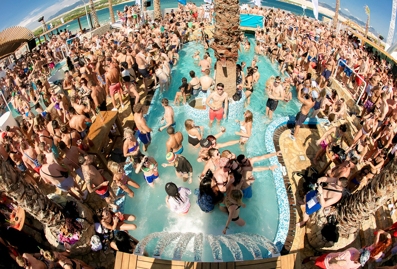

Когды ты отдыхаешь на море со своими друзьями всегда очень весело, вы в угаре и делаете много разных штук.
На каждом шагу работают бары, кафе и рестораны; музыка из многочисленных заведений сливается в монотонный гул. Вот она, привычная атмосфера курорта! С наступлением сумерек Патонг превращается в центр ночной жизни — в клубах начинаются безумные вечеринки с танцами до рассвета. Пляж понравится клабберам, любителям шумного и активного отдыха в большой компании.
